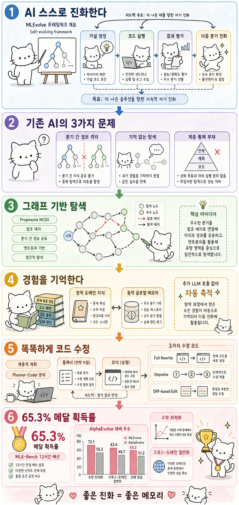

Myno의 블로그
Myno의 블로그 미노
미노
"AI가 똑똑한 ML 시스템을 만들어줄 수 있을까?"
요즘 머신러닝(ML) 시스템을 만들려면 엄청 복잡해. 데이터를 준비하고, 모델을 설계하고, 학습시키고, 결과를 평가하고… 이걸 전문가들이 수작업으로 다 해야 해. 프로그래밍 대회 같은 거야. 근데 이걸 AI가 대신 해줄 수 있으면 얼마나 좋을까?
이걸 "자동 ML 알고리즘 발견"이라고 해. 쉽게 말하면 "AI가 AI를 만드는" 프레임워크야. 문제는 — 기존 방법들이 성능이 별로였다는 거야.
"기존 AI 코드 작성기의 3가지 치명적 문제"
연구자들이 기존 시스템(AIDE, ML-Master, MARS 등)을 분석해보니 세 가지 근본적인 문제가 있었어.
- 🔀 가지 친 후 연락 두절: 나무(Tree) 구조로 탐색하다 보니, 한 가지를 선택하면 다른 가지에서 찾은 좋은 방법을 절대 알 수 없어. 비유하자면 "동네 탐색대에서 A팀과 B팀이 각자 따로 돌아다니는데, 서로 발견한 물건을 공유 안 하는 것"과 같아.
- 🧠 기억 상실: 시도해본 것 중 뭐가 성공이고 뭐가 실패인지 기억 못 해. 매번 백지상태에서 다시 시작. "수학 문제를 풀 때, 어제 푼 방법을 오늘 또 풀 때 전혀 안 쓰는 것"이야.
- 🏗️ 전면 재건: 코드를 수정할 때 조금만 고치면 되는걸 매번 처음부터 전부 다시 씀. "에세이에서 오타 하나 고치려고 전체 에세이를 새로 쓰는 것"과 같아. 비효율의 극치지.
"그래서 MLEvolve가 세 가지를 새로 만들었다"
상하이 인공지능 연구소와 화동사범대학교 연구진이 이 세 가지 문제를 각각 해결하는 MLEvolve라는 프레임워크를 만들었어.
"문제 1 해결: 가지들끼리 연결해주기"
첫 번째는 Progressive MCGS라고 불러. 핵심 아이디어는 간단해.
기존에는 나무(Tree) 구조였어. 위에서 아래로 뻗어나가고, 가지가 갈라지면 끝. 서로 다른 가지끼리는 정보를 못 주고받아.
MLEvolve는 이걸 그래프(Graph)로 바꿨어. 그래프는 가지끼리 서로 연결될 수 있어. 이걸 "참조 에지(Reference Edge)"라고 불러. A 가지에서 좋은 방법을 찾으면, B 가지에서도 그 방법을 참고할 수 있어.
그리고 엔트로피 기반 탐색 스케줄도 있어. 이건 한마디로 "처음에는 넓게 탐색하다가, 점점 유망한 곳에 집중"하는 거야. 게임 처음에는 맵 전체를 돌아다니면서 아이템 모으고, 나중에 보스방으로 직행하는 것과 비슷해.
초기: 넓게 여러 방향 동시 탐색 → 중기: 유망한 방향에 자원 집중 → 후기: 최적 경로에 정밀 집중
"문제 2 해결: AI의 경험 노트"
두 번째는 Retrospective Memory(회고적 기억)야. AI가 시도한 것들을 기억하는 시스템이야.
이 기억은 두 가지로 나뉘어.
- 📚 정적 지식 (도메인 지식 베이스): 미리 준비해둔 ML 관련 기본 지식. "수업 전에 배운 교과서 지식" 같은 거야. 처음부터 어떻게 시작해야 할지 알려줘서 콜드스타트(처음 시작할 때의 막막함)를 해결해.
- 📓 동적 메모리 (글로벌 메모리): 실험하면서 자동으로 축적되는 경험. "시험 볼 때마다 오답 노트에 틀린 문제를 자동으로 기록하는 것"이야. 시간이 지날수록 노트가 두꺼워져서, 비슷한 문제를 만나면 과거 경험을 바로 활용할 수 있어.
특히 좋은 점은, 이 기억 시스템이 별도의 LLM 호출 없이 자동으로 작동한다는 거야. 부가 비용 없이 경험이 자연스럽게 쌓여.
"문제 3 해결: 현명하게 코드 수정하기"
세 번째는 계층적 적응형 코드 생성이야. "무엇을 수정할지(Plan)"와 "어떻게 구현할지(Code)"를 분리하는 거야.
그리고 상황에 따라 세 가지 모드로 코드를 수정해.
- 📝 Full Rewrite: 처음이거나 대폭 변경할 때 → 전체 새로 쓰기. "첫 에세이 작성"
- ✏️ Stepwise: 중간 규모 수정 → 단계별로 점진 개선. "에세이 문단 순서 바꾸기"
- 🔍 Diff-based Edit: 후기 정밀 단계 → 필요한 부분만 국소 수정. "오타 하나 고치기"
비유하자면, "에디터(Planner)가 '3번째 문단 수정해'라고 지시하면, 작가(Coder)가 그 문단만 정확하게 고치는 방식"이야. 매번 전체 에세이를 새로 쓸 필요가 없어져.
"결과: 기존 AI를 다 이겼다"
이 세 가지를 합친 MLEvolve는 실험에서 압도적인 성과를 보여줬어.
MLE-Bench 평균 메달 획득률
(12시간 예산 — 기존 방법들은 24시간 줌)
재미있는 건 시간을 절반으로 줄였는데도 기존 모든 방법을 이겼다는 거야. AIDE, ML-Master, MARS, FM-Agent, R&D-Agent — 전부 MLEvolve보다 성능이 낮아.
그리고 수학 알고리즘 최적화 태스크에서도 구글 DeepMind의 AlphaEvolve 시리즈를 넘어서는 성능을 보여줬어. 이건 단순히 ML에만 좋은 게 아니라, 범용적으로 다양한 분야에서 잘 작동한다는 증거야.
핵심 인사이트: 강력한 솔루션은 한 번에 완벽하게 만들어지는 게 아니라, 축적된 경험과 여러 경로를 참조하며 점진적으로 진화하는 거다.
📝 한 줄 요약
- MLEvolve는 AI가 스스로 ML 알고리즘을 발견·개선하는 자가 진화형 프레임워크
- 기존 시스템의 3가지 한계(분기 격리, 기억 부재, 비효율적 재작성)를 모두 해결
- Progressive MCGS: 그래프 기반 탐색으로 분기 간 정보 공유 + 엔트로피 기반 점진적 탐색
- Retrospective Memory: 정적 도메인 지식 + 동적 글로벌 메모리로 자동 경험 축적
- 계층적 적응형 코드 생성: Plan-Code 분리 + Full Rewrite/Stepwise/Diff 세 가지 모드
- MLE-Bench 65.3% 메달 획득률 — 12시간 예산으로 SOTA 달성 (기존 방법들은 24시간)
- 수학 알고리즘 최적화에서 AlphaEvolve 시리즈 대비 우수
- ML 전문이 아닌 범용 자가 진화 프레임워크로서 크로스-도메인 일반화 입증
논문: MLEvolve: A Self-Evolving Framework for Automated Machine Learning Algorithm Discovery
Shangheng Du, Xiangchao Yan, Jinxin Shi, Zongsheng Cao 외 14인
상하이 인공지능 연구소 · 화동사범대학교
arXiv: 2606.06473v1 · Jun 2026